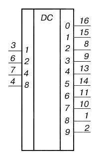
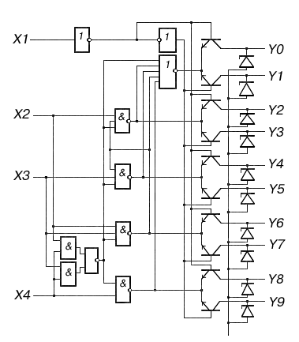

Микросхема К155ИД1
Микросхема К155ИД1 представляет собой высоковольтный дешифратор управления газоразрядными индикаторам.
Предназначены для преобразования двоично-десятичного кода в десятичный.
Дешифратор состоит из логических ТТЛ-схем и десяти высоковольтных транзисторов.
На входы X1-X4 поступают числа от 0 до 9 в двоичном коде, при этом открывается соответствующий выходной транзистор.
Номер выбранного выхода соответствует десятичному эквиваленту входного кода. Коды, эквивалентные числам от 10 до 15, дешифратором на выходе не отображаются.
Содержит 83 интегральных элементов.
 Рис. 1 - Обозначение на схеме ИМС К155ИД1 |
Назначение выводов: 1 - выход Y8; 2 - выход Y9; 3 - вход X1; 4 - вход X4; 5 - напряжение питания (+Uп ); 6 - вход X2; 7 - вход X3; 8 - выход Y2; 9 - выход Y3; 10 - выход Y7; 11 - выход Y6; 12 - общий; 13 - выход Y4; 14 - выход Y5; 15 - выход Y1; 16 - выход Y0; |

Рис. 2 - Функциональная схема ИМС К155ИД1
Корпус К155ИД1 типа 238.16-1, КМ155ИД1 типа 201.16-5, КБ155ИД1-4 - бескорпусная.
Таблица 1
| Номинальное напряжение питания | 5 В ±5% |
| Выходное напряжение низкого уровня при Uп= 4,75 В, Iвых= 7 мА, Uвх0= 0,8 В, Uвх1= 2 В |
≤ 2,5 В |
| Выходное пробивное напряжение при Uп= 5,25 В, Iвых= 0,5 мА, Uвх0= 0,8 В, Uвх1= 2 В |
|
| Прямое падение напряжение на антизвонном диоде при Uп= 4,75 В | |
| Входной ток низкого уровня при Uп= 5,25 В Uвх0= 0,4 В, Uвх1= 4,5 В по выводу 3 по выводам 4,6,7 |
≤ - 1,6 мА ≤ - 3,2 мА |
| Входной ток высокого уровня при Uп= 5,25 В Uвх0= 0 В, Uвх1= 2,4 В по выводу 3 по выводам 4,6,7 |
≤ 40 мкА ≤ 80 мкА |
| Входной пробивной ток при Uп= 5,25 В | ≤ 1 мА |
| Ток потребления при Uп= 5,25 В, Uвх0=0 В | ≤ 25 мА |
| Выходной ток высокого уровня при Uп= 5,25 В | ≤ 50 мкА |
| Выходной ток высокого уровня при входной информации 10-15 | ≤ 15 мА |
| Напряжение на выходе закрытой ИС | ≤ 60 В |
| Время нарастания и спада входного импульса | ≤ ≤150 нс |
| Температура окружающей среды КМ155ИД1 К155ИД1 |
-45...+85 ° C -10...+70 ° C |
Рекомендации по применению
При работе ИС с газоразрядными индикаторами для исключения подсветки цифр необходимо, чтобы зажигание индикатора происходило при токе катода не менее 50 мкА, для чего напряжение на выходе дешифратора должно быть не более 55 В. Ограничение напряжения на закрытых выводах до 60 В и менее осуществляется путем подключения к выводам ИС внешних резисторов, стабилитронов, диодных матриц с общим катодом с подпором от резистивного делителя напряжения. При управлении работой газоразрядных индикаторов допискается эксплуатация ИС с напряжением на закрытых выходах более 60 В (на пробойных участках вольт-амперных характеристик внутренних ограничительных стабилитронов).При этом режиме эксплуатации наработка ИС составляет 500 ч. Значение параметров выходное пробивное напряжение и выходной пробивной ток характеризуют внутренние ограничительные стабилитроны на выходе ИС.
Зарубежные аналоги
SN74141N, SN74141J